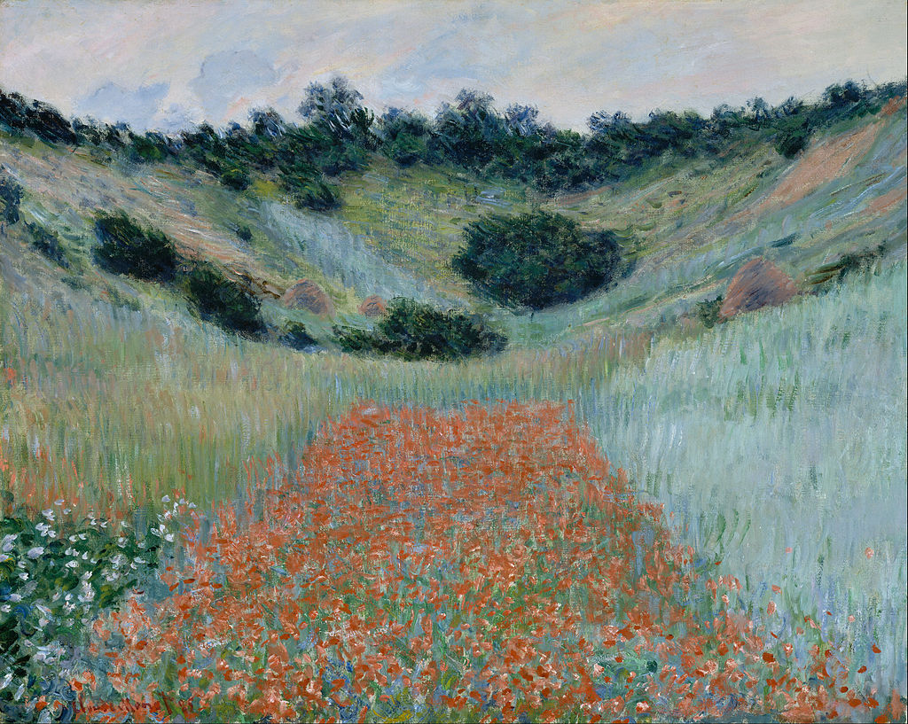

<head>
<meta charset="UTF-8" />
<meta name="keywords" content="drawing, painting" />
<meta name="description" content="drawings by Sunjy" />
<title>Sunjy</title>
<link rel="shortcut icon" type="image/x-icon" href="../../mImages/mCommon/favicon.ico" media="screen" />
<link rel="stylesheet" type="text/css" href="../../mCsses/mCommon/mCssA.css" />
<link rel="stylesheet" type="text/css" href="../../mCsses/mCommon/mCssB.css" />
<link rel="stylesheet" type="text/css" href="../../mCsses/mCommon/mCssC.css" />
<link rel="stylesheet" type="text/css" href="../../mCsses/mCommon/mCssD.css" />
<link rel="stylesheet" type="text/css" href="../../mCsses/mContent/mCssA.css" />
<link rel="stylesheet" type="text/css" href="../../mCsses/mContent/mCssB.css" />
<link rel="stylesheet" type="text/css" href="../../mCsses/mContent/mCssC.css" />
<link rel="stylesheet" type="text/css" href="../../mCsses/mContent/mCssD.css" />
</head>
<script type="text/javascript" src="../../mScripts/mContent/mContentAA.js" /></script>
<script type="text/javascript" src="../../mScripts/mContent/mContentAB.js" /></script>
<script type="text/javascript" src="../../mScripts/mContent/mContentAC.js" /></script>
<script type="text/javascript" src="../../mScripts/mContent/mContentAD.js" /></script>
<script type="text/javascript"></script> 
<script type="text/javascript">
document.write('<div class="mImgAbsolute"></div>');
/*
document.write('<p class="mFontSizeBColor" />From a white paper...</p>');
document.write('<table class="center"><tr><td>');
document.write('');
document.write('</td></tr></table>');
*/
</script>


<script type="text/javascript">
document.write('<p class="mFontSizeBColor" />Poppy Field in a Hollow near Giverny</p>');
document.write('<p class="mFontSizeSColor" />“Poppy Field in a Hollow near Giverny” by Claude Monet was painted in 1885. Just 80 km (50 mi) northwest from Paris, with rolling hills and cultivated fields of poppies and wheat.<br><br>Monet roamed this region during his first few years after arriving at the village of Giverny. Although Monet had started to plant in his garden shortly after he moved in Giverny, his garden had not yet developed.<br><br>It had not yet bloomed to a stage that could match the surrounding countryside. Monet instead turned to the nearby poppy fields, which offered a dynamic and varied display of natural color and beauty for his inspiration.<br><br>Giverny sits on the “right bank” of the River Seine and is best known as the location of Claude Monet’s garden and home. Claude Monet noticed the village of Giverny while looking out of a train window.<br><br>He made up his mind to move there and rented a house and the area surrounding it. In 1890 he had enough money to buy the house and land outright and set out to create the magnificent gardens he wanted to paint.<br><br>Some of his most famous paintings were of his garden in Giverny, famous for its Japanese bridge, the pond with the water lilies, the wisterias, and the azaleas.<br><br>Beginning around 1887, several American Impressionist artists also settled to work in Giverny, drawn by the landscapes, the atmosphere, and the presence of Monet.<br><br>The term Decorative Impressionism was coined in 1911 to describe the work of a “second wave” of American painters who exhibited in America as the “The Giverny Group.”<br><br>Unfortunately, World War I marked the end of the art colony in Giverny.<br><br>Giverny is near Vernon, where the Battle of Vernon took place during 1944. During the battle, British forces lost 600 men in 4 days, Germany lost 1,600 men, and 12 French Resistance fighters were killed.<br><br>The goal of the Allies was to cut the retreat of the occupying forces. They did this by destroying the bridges over the Seine river, as well as the railroads.<br><br>Thus 60 years after this painting, of the field of red poppies, blood was again being spilled in the hollows.<br></p>');
document.write('<table class="center" /><tr><td>');
document.write('<br>Monet roamed this region during his first few years after arriving at the village of Giverny. Although Monet had started to plant in his garden shortly after he moved in Giverny, his garden had not yet developed.<br><br>It had not yet bloomed to a stage that could match the surrounding countryside. Monet instead turned to the nearby poppy fields, which offered a dynamic and varied display of natural color and beauty for his inspiration.<br><br>Giverny sits on the “right bank” of the River Seine and is best known as the location of Claude Monet’s garden and home. Claude Monet noticed the village of Giverny while looking out of a train window.<br><br>He made up his mind to move there and rented a house and the area surrounding it. In 1890 he had enough money to buy the house and land outright and set out to create the magnificent gardens he wanted to paint.<br><br>Some of his most famous paintings were of his garden in Giverny, famous for its Japanese bridge, the pond with the water lilies, the wisterias, and the azaleas.<br><br>Beginning around 1887, several American Impressionist artists also settled to work in Giverny, drawn by the landscapes, the atmosphere, and the presence of Monet.<br><br>The term Decorative Impressionism was coined in 1911 to describe the work of a “second wave” of American painters who exhibited in America as the “The Giverny Group.”<br><br>Unfortunately, World War I marked the end of the art colony in Giverny.<br><br>Giverny is near Vernon, where the Battle of Vernon took place during 1944. During the battle, British forces lost 600 men in 4 days, Germany lost 1,600 men, and 12 French Resistance fighters were killed.<br><br>The goal of the Allies was to cut the retreat of the occupying forces. They did this by destroying the bridges over the Seine river, as well as the railroads.<br><br>Thus 60 years after this painting, of the field of red poppies, blood was again being spilled in the hollows.<br>" />');
document.write('</td></tr></table>');
</script>


